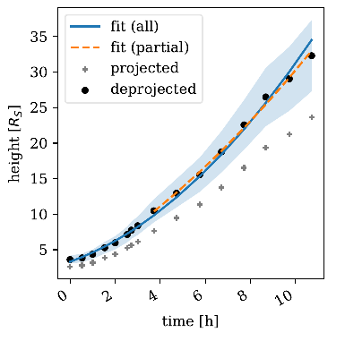
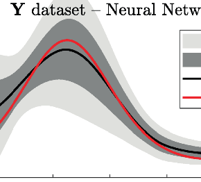
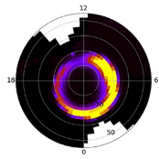

-
Parameter Distributions for the Drag-Based Modeling of CME Propagation
G. Napoletano, R. Foldes, F. Berrilli, E. Camporeale, at al. (2022), Space Weather, e2021SW002925
In recent years, ensemble modelling has been widely employed in space weather to estimate uncertainties in forecasts. We here focus on the ensemble modelling of CME arrival times and arrival velocities using a drag-based model, which is well-suited for this purpose due to its simplicity and low computational cost. Although ensemble techniques have previously been applied to the drag-based model, it is still not clear how to best determine distributions for its input parameters, namely the drag parameter and the solar wind speed.
More/Less
The aim of this work is to evaluate statistical distributions for these model parameters starting from a list of past CME-ICME events. We employ LASCO coronagraph observations to measure initial CME position and speed, and in situ data to associate them to arrival date and impact speed. For each event we ran a statistical procedure to invert the model equations producing the parameters distributions as the output.
Our results indicate that the distributions employed in previous works were appropriately selected, even though based on restricted samples and heuristic considerations.
-
Ten Ways to Apply Machine Learning in Earth and Space Sciences
J. Bortnik and E. Camporeale (2021), EOS, 102
Machine learning is gaining popularity across scientific and technical fields, but it’s often not clear to researchers, especially young scientists, how they can apply these methods in their work.

-
ACCRUE: Accurate and Reliable Uncertainty Estimate in Deterministic models
E. Camporeale, A. Carè (2021), Int. J. Uncertainty Quantification , 11(4).
In this paper we focus on the problem of assigning uncertainties to single-point predictions generated by a deterministic model that outputs a continuous variable. This problem applies to any state-of-the-art physics or engineering models that have a computational cost that does not readily allow running ensembles and estimating the uncertainty associated to single-point predictions. Essentially, we devise a method to easily transform a deterministic prediction into a probabilistic one. We show that for doing so, one has to compromise between the accuracy and the reliability (calibration) of such a probabilistic model. Hence, we introduce a cost function that encodes their trade-off, and we call this new method ACCRUE (ACCurate and Reliable Uncertainty Estimate).
More/Less
We use the continuous rank probability score to measure accuracy and we derive an analytic formula for the reliability, in the case of forecasts of continuous scalar variables expressed in terms of Gaussian distributions. The new ACCRUE cost function is then used to estimate the input-dependent variance, given a black-box "oracle" mean function, by solving a two-objective optimization problem. The simple philosophy behind this strategy is that predictions based on the estimated variances should not only be accurate, but also reliable (i.e., statistically consistent with observations). Conversely, early works based on the minimization of classical cost functions, such as the negative log probability density, cannot simultaneously enforce both accuracy and reliability. We show several examples both with synthetic data, where the underlying hidden noise can accurately be recovered, and with large real-world datasets.

-
Toward a next generation particle precipitation model: Mesoscale prediction through machine learning (a case study and framework for progress)
R. McGranaghan, J. Ziegler, T. Bloch, S. Hatch, E. Camporeale, K. Lynch, M. Owens, J. Gjerloev, B. Zhang, S.H. Skone (2021), Space Weather , 19, e2020SW002684.
We advance the modeling capability of electron particle precipitation from the magnetosphere to the ionosphere through a new database and use of machine learning tools to gain utility from those data. We have compiled, curated, analyzed, and made available a new and more capable database of particle precipitation data that includes 51 satellite years of Defense Meteorological Satellite Program (DMSP) observations temporally aligned with solar wind and geomagnetic activity data. The new total electron energy flux particle precipitation nowcast model, a neural network called PrecipNet, takes advantage of increased expressive power afforded by machine learning approaches to appropriately utilize diverse information from the solar wind and geomagnetic activity and, importantly, their time histories. More/Less
With a more capable representation of the organizing parameters and the target electron energy flux observations, PrecipNet achieves a >50% reduction in errors from a current state-of-the-art model (OVATION Prime), better captures the dynamic changes of the auroral flux, and provides evidence that it can capably reconstruct mesoscale phenomena. We create and apply a new framework for space weather model evaluation that culminates previous guidance from across the solar-terrestrial research community. The research approach and results are representative of the `new frontier' of space weather research at the intersection of traditional and data science-driven discovery and provides a foundation for future efforts.
-
Space Weather research in the Digital Age and across the full data lifecycle: Introduction to the Topical Issue
R. McGranaghan, E. Camporeale, M. Georgoulis, A. Anastasiadis (2021), J. Space Weather Space Clim., 11(50).
The onset and rapid advance of the Digital Age have brought challenges and opportunities for scientific research characterized by a continuously evolving data landscape reflected in the four V’s of big data: volume, variety, veracity, and velocity. The big data landscape supersedes traditional means of storage, processing, management, and exploration, and requires adaptation and innovation across the full data lifecycle (i.e., collection, storage and processing, analytics, and representation). The Topical Issue, “Space Weather research in the Digital Age and across the full data lifecycle”, collects research from across the full data lifecycle (collection, management, analysis, and communication; collectively “Data Science”) and offers a tractable compendium that illustrates the latest computational and data science trends, tools, and advances for Space Weather research.
More/Less
We introduce the paradigm shift in Space Weather and the articles in the Topical Issue. We create a network view of the research that highlights the contribution to the change of paradigm and reveals the trends that will guide it hereafter.